bike
AG-OGA-MOTO-0001
OGA-MOTO · OBJ C
LOCAL RENDER
253 production files · 52 with thumbnails. Tier: A animated · B rigged · C static · D unsupported. LOCAL RENDER = actual model rendered with three.js; OFFICIAL = creator image.
Kenney (kenney.nl) · CC0 1.0 Universal (Public Domain Dedication) · Kenney stylized low-poly; shared colormap atlas
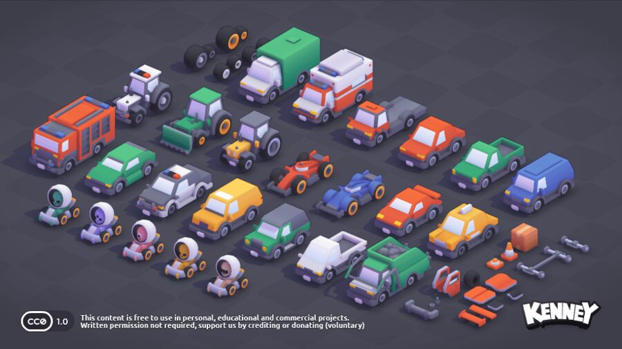
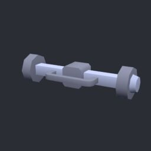
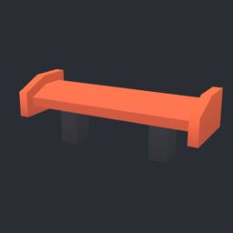
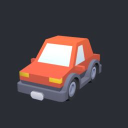
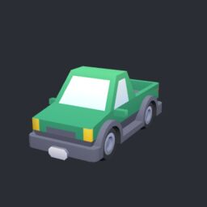
AG-KN-CARS-0002 · box · glb · C
AG-KN-CARS-0004 · cone · glb · C
AG-KN-CARS-0003 · cone-flat · glb · C
AG-KN-CARS-0005 · debris-bolt · glb · C
AG-KN-CARS-0006 · debris-bumper · glb · C
AG-KN-CARS-0008 · debris-door · glb · C
AG-KN-CARS-0007 · debris-door-window · glb · C
AG-KN-CARS-0010 · debris-drivetrain · glb · C
AG-KN-CARS-0011 · debris-nut · glb · C
AG-KN-CARS-0012 · debris-plate-a · glb · C
AG-KN-CARS-0013 · debris-plate-b · glb · C
AG-KN-CARS-0014 · debris-plate-small-a · glb · C
AG-KN-CARS-0015 · debris-plate-small-b · glb · C
AG-KN-CARS-0016 · debris-spoiler-a · glb · C
AG-KN-CARS-0018 · debris-tire · glb · C
AG-KN-CARS-0020 · delivery · glb · C
AG-KN-CARS-0019 · delivery-flat · glb · C
AG-KN-CARS-0021 · firetruck · glb · C
AG-KN-CARS-0022 · garbage-truck · glb · C
AG-KN-CARS-0023 · hatchback-sports · glb · C
AG-KN-CARS-0024 · kart-oobi · glb · C
AG-KN-CARS-0026 · kart-ooli · glb · C
AG-KN-CARS-0027 · kart-oopi · glb · C
AG-KN-CARS-0028 · kart-oozi · glb · C
AG-KN-CARS-0029 · police · glb · C
AG-KN-CARS-0031 · race · glb · C
AG-KN-CARS-0030 · race-future · glb · C
AG-KN-CARS-0032 · sedan-sports · glb · C
AG-KN-CARS-0035 · suv · glb · C
AG-KN-CARS-0034 · suv-luxury · glb · C
AG-KN-CARS-0036 · taxi · glb · C
AG-KN-CARS-0039 · tractor · glb · C
AG-KN-CARS-0037 · tractor-police · glb · C
AG-KN-CARS-0038 · tractor-shovel · glb · C
AG-KN-CARS-0040 · truck-flat · glb · C
AG-KN-CARS-0042 · van · glb · C
AG-KN-CARS-0043 · wheel-dark · glb · C
AG-KN-CARS-0044 · wheel-default · glb · C
AG-KN-CARS-0045 · wheel-racing · glb · C
AG-KN-CARS-0046 · wheel-tractor-back · glb · C
AG-KN-CARS-0047 · wheel-tractor-dark-back · glb · C
AG-KN-CARS-0048 · wheel-tractor-dark-front · glb · C
AG-KN-CARS-0049 · wheel-tractor-front · glb · C
AG-KN-CARS-0050 · wheel-truck · glb · C
Kenney (kenney.nl) · CC0 1.0 Universal (Public Domain Dedication) · Kenney stylized low-poly; shared colormap atlas
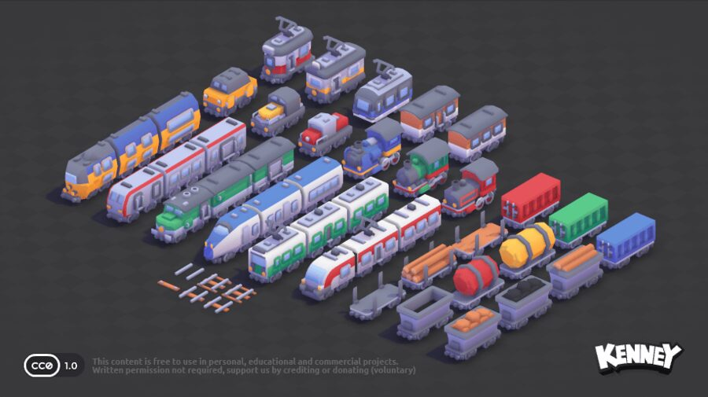
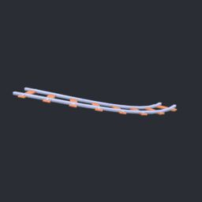
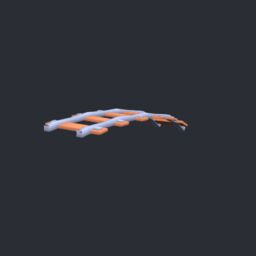
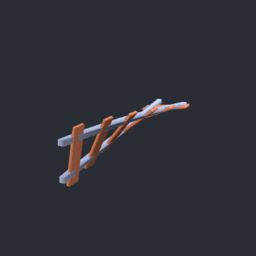
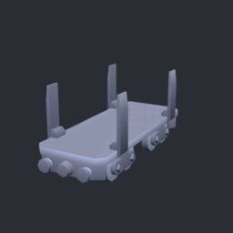
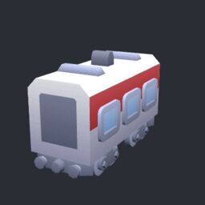
AG-KN-TRAIN-0002 · railroad-corner-large · glb · C
AG-KN-TRAIN-0004 · railroad-corner-small · glb · C
AG-KN-TRAIN-0003 · railroad-corner-small-ramp · glb · C
AG-KN-TRAIN-0005 · railroad-curve · glb · C
AG-KN-TRAIN-0007 · railroad-damaged-corner-large · glb · C
AG-KN-TRAIN-0006 · railroad-damaged-corner-large-ramp · glb · C
AG-KN-TRAIN-0009 · railroad-damaged-corner-small · glb · C
AG-KN-TRAIN-0008 · railroad-damaged-corner-small-ramp · glb · C
AG-KN-TRAIN-0010 · railroad-damaged-curve · glb · C
AG-KN-TRAIN-0023 · railroad-damaged-straight · glb · C
AG-KN-TRAIN-0012 · railroad-damaged-straight-bend · glb · C
AG-KN-TRAIN-0011 · railroad-damaged-straight-bend-large · glb · C
AG-KN-TRAIN-0013 · railroad-damaged-straight-bump-down · glb · C
AG-KN-TRAIN-0014 · railroad-damaged-straight-bump-up · glb · C
AG-KN-TRAIN-0015 · railroad-damaged-straight-hill-beginning · glb · C
AG-KN-TRAIN-0017 · railroad-damaged-straight-hill-complete · glb · C
AG-KN-TRAIN-0016 · railroad-damaged-straight-hill-complete-half · glb · C
AG-KN-TRAIN-0020 · railroad-damaged-straight-skew-left · glb · C
AG-KN-TRAIN-0019 · railroad-damaged-straight-skew-left-side · glb · C
AG-KN-TRAIN-0022 · railroad-damaged-straight-skew-right · glb · C
AG-KN-TRAIN-0021 · railroad-damaged-straight-skew-right-side · glb · C
AG-KN-TRAIN-0025 · railroad-rail-corner-large · glb · C
AG-KN-TRAIN-0024 · railroad-rail-corner-large-ramp · glb · C
AG-KN-TRAIN-0027 · railroad-rail-corner-small · glb · C
AG-KN-TRAIN-0026 · railroad-rail-corner-small-ramp · glb · C
AG-KN-TRAIN-0028 · railroad-rail-curve · glb · C
AG-KN-TRAIN-0041 · railroad-rail-straight · glb · C
AG-KN-TRAIN-0030 · railroad-rail-straight-bend · glb · C
AG-KN-TRAIN-0029 · railroad-rail-straight-bend-large · glb · C
AG-KN-TRAIN-0031 · railroad-rail-straight-bump-down · glb · C
AG-KN-TRAIN-0032 · railroad-rail-straight-bump-up · glb · C
AG-KN-TRAIN-0033 · railroad-rail-straight-hill-beginning · glb · C
AG-KN-TRAIN-0034 · railroad-rail-straight-hill-complete-half · glb · C
AG-KN-TRAIN-0036 · railroad-rail-straight-hill-end · glb · C
AG-KN-TRAIN-0038 · railroad-rail-straight-skew-left · glb · C
AG-KN-TRAIN-0037 · railroad-rail-straight-skew-left-side · glb · C
AG-KN-TRAIN-0040 · railroad-rail-straight-skew-right · glb · C
AG-KN-TRAIN-0039 · railroad-rail-straight-skew-right-side · glb · C
AG-KN-TRAIN-0054 · railroad-straight · glb · C
AG-KN-TRAIN-0043 · railroad-straight-bend · glb · C
AG-KN-TRAIN-0042 · railroad-straight-bend-large · glb · C
AG-KN-TRAIN-0044 · railroad-straight-bump-down · glb · C
AG-KN-TRAIN-0045 · railroad-straight-bump-up · glb · C
AG-KN-TRAIN-0046 · railroad-straight-hill-beginning · glb · C
AG-KN-TRAIN-0048 · railroad-straight-hill-complete · glb · C
AG-KN-TRAIN-0047 · railroad-straight-hill-complete-half · glb · C
AG-KN-TRAIN-0049 · railroad-straight-hill-end · glb · C
AG-KN-TRAIN-0051 · railroad-straight-skew-left · glb · C
AG-KN-TRAIN-0050 · railroad-straight-skew-left-side · glb · C
AG-KN-TRAIN-0053 · railroad-straight-skew-right · glb · C
AG-KN-TRAIN-0055 · spline-segment · glb · C
AG-KN-TRAIN-0057 · spline-track · glb · C
AG-KN-TRAIN-0056 · spline-track-damaged · glb · C
AG-KN-TRAIN-0061 · track · glb · C
AG-KN-TRAIN-0058 · track-detailed · glb · C
AG-KN-TRAIN-0060 · track-single · glb · C
AG-KN-TRAIN-0059 · track-single-detailed · glb · C
AG-KN-TRAIN-0062 · train-carriage-box · glb · C
AG-KN-TRAIN-0063 · train-carriage-coal · glb · C
AG-KN-TRAIN-0064 · train-carriage-container-blue · glb · C
AG-KN-TRAIN-0065 · train-carriage-container-green · glb · C
AG-KN-TRAIN-0066 · train-carriage-container-red · glb · C
AG-KN-TRAIN-0067 · train-carriage-dirt · glb · C
AG-KN-TRAIN-0068 · train-carriage-flatbed-wood · glb · C
AG-KN-TRAIN-0070 · train-carriage-lumber · glb · C
AG-KN-TRAIN-0072 · train-carriage-tank · glb · C
AG-KN-TRAIN-0071 · train-carriage-tank-large · glb · C
AG-KN-TRAIN-0073 · train-carriage-wood · glb · C
AG-KN-TRAIN-0074 · train-connector · glb · C
AG-KN-TRAIN-0075 · train-diesel-a · glb · C
AG-KN-TRAIN-0076 · train-diesel-b · glb · C
AG-KN-TRAIN-0077 · train-diesel-box-a · glb · C
AG-KN-TRAIN-0078 · train-diesel-box-b · glb · C
AG-KN-TRAIN-0079 · train-diesel-box-c · glb · C
AG-KN-TRAIN-0080 · train-diesel-c · glb · C
AG-KN-TRAIN-0081 · train-electric-bullet-a · glb · C
AG-KN-TRAIN-0082 · train-electric-bullet-b · glb · C
AG-KN-TRAIN-0083 · train-electric-bullet-c · glb · C
AG-KN-TRAIN-0084 · train-electric-city-a · glb · C
AG-KN-TRAIN-0085 · train-electric-city-b · glb · C
AG-KN-TRAIN-0087 · train-electric-double-a · glb · C
AG-KN-TRAIN-0088 · train-electric-double-b · glb · C
AG-KN-TRAIN-0089 · train-electric-double-c · glb · C
AG-KN-TRAIN-0090 · train-electric-square-a · glb · C
AG-KN-TRAIN-0091 · train-electric-square-b · glb · C
AG-KN-TRAIN-0092 · train-electric-square-c · glb · C
AG-KN-TRAIN-0093 · train-electric-subway-a · glb · C
AG-KN-TRAIN-0094 · train-electric-subway-b · glb · C
AG-KN-TRAIN-0095 · train-electric-subway-c · glb · C
AG-KN-TRAIN-0096 · train-locomotive-a · glb · C
AG-KN-TRAIN-0097 · train-locomotive-b · glb · C
AG-KN-TRAIN-0098 · train-locomotive-c · glb · C
AG-KN-TRAIN-0099 · train-locomotive-passenger-a · glb · C
AG-KN-TRAIN-0100 · train-locomotive-passenger-b · glb · C
AG-KN-TRAIN-0101 · train-tram-classic · glb · C
AG-KN-TRAIN-0102 · train-tram-modern · glb · C
AG-KN-TRAIN-0103 · train-tram-round · glb · C
Kenney (kenney.nl) · CC0 1.0 Universal (Public Domain Dedication) · Kenney stylized low-poly; shared colormap atlas
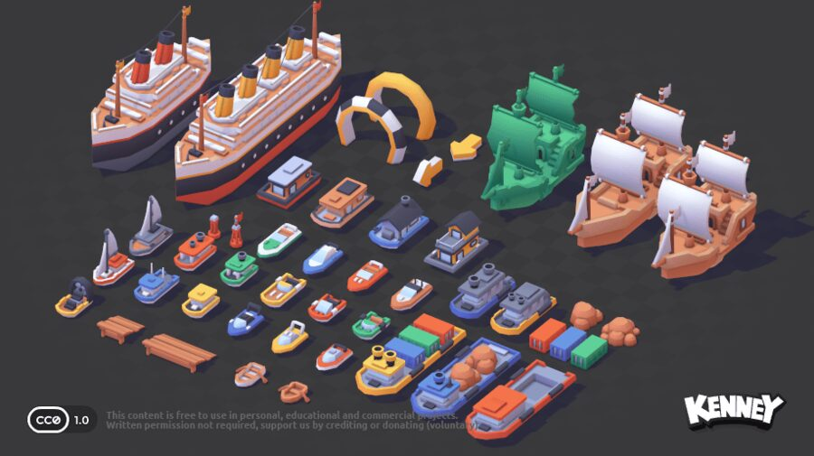
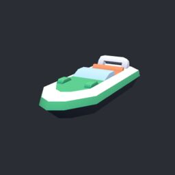
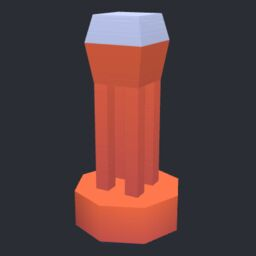
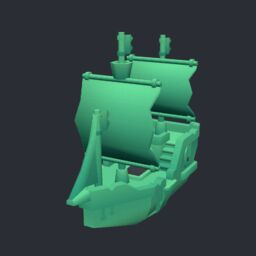
AG-KN-WATERCRAFT-0002 · arrow · glb · C
AG-KN-WATERCRAFT-0003 · boat-fan · glb · C
AG-KN-WATERCRAFT-0004 · boat-fishing-small · glb · C
AG-KN-WATERCRAFT-0005 · boat-house-a · glb · C
AG-KN-WATERCRAFT-0006 · boat-house-b · glb · C
AG-KN-WATERCRAFT-0007 · boat-house-c · glb · C
AG-KN-WATERCRAFT-0009 · boat-row-large · glb · C
AG-KN-WATERCRAFT-0010 · boat-row-small · glb · C
AG-KN-WATERCRAFT-0011 · boat-sail-a · glb · C
AG-KN-WATERCRAFT-0012 · boat-sail-b · glb · C
AG-KN-WATERCRAFT-0013 · boat-speed-a · glb · C
AG-KN-WATERCRAFT-0014 · boat-speed-b · glb · C
AG-KN-WATERCRAFT-0016 · boat-speed-d · glb · C
AG-KN-WATERCRAFT-0017 · boat-speed-e · glb · C
AG-KN-WATERCRAFT-0018 · boat-speed-f · glb · C
AG-KN-WATERCRAFT-0019 · boat-speed-g · glb · C
AG-KN-WATERCRAFT-0020 · boat-speed-h · glb · C
AG-KN-WATERCRAFT-0021 · boat-speed-i · glb · C
AG-KN-WATERCRAFT-0023 · boat-tow-a · glb · C
AG-KN-WATERCRAFT-0024 · boat-tow-b · glb · C
AG-KN-WATERCRAFT-0025 · boat-tug-a · glb · C
AG-KN-WATERCRAFT-0026 · boat-tug-b · glb · C
AG-KN-WATERCRAFT-0027 · boat-tug-c · glb · C
AG-KN-WATERCRAFT-0028 · buoy-flag · glb · C
AG-KN-WATERCRAFT-0030 · cargo-container-a · glb · C
AG-KN-WATERCRAFT-0031 · cargo-container-b · glb · C
AG-KN-WATERCRAFT-0032 · cargo-container-c · glb · C
AG-KN-WATERCRAFT-0033 · cargo-pile-a · glb · C
AG-KN-WATERCRAFT-0034 · cargo-pile-b · glb · C
AG-KN-WATERCRAFT-0035 · gate-finish · glb · C
AG-KN-WATERCRAFT-0038 · ramp · glb · C
AG-KN-WATERCRAFT-0037 · ramp-wide · glb · C
AG-KN-WATERCRAFT-0039 · ship-cargo-a · glb · C
AG-KN-WATERCRAFT-0040 · ship-cargo-b · glb · C
AG-KN-WATERCRAFT-0041 · ship-cargo-c · glb · C
AG-KN-WATERCRAFT-0042 · ship-large · glb · C
AG-KN-WATERCRAFT-0044 · ship-ocean-liner · glb · C
AG-KN-WATERCRAFT-0043 · ship-ocean-liner-small · glb · C
AG-KN-WATERCRAFT-0046 · ship-small · glb · C
crookedmouth (OpenGameArt user) · CC0 1.0 Universal (Public Domain Dedication) · Community low-poly (mixed style)
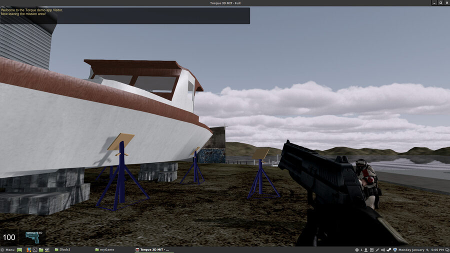
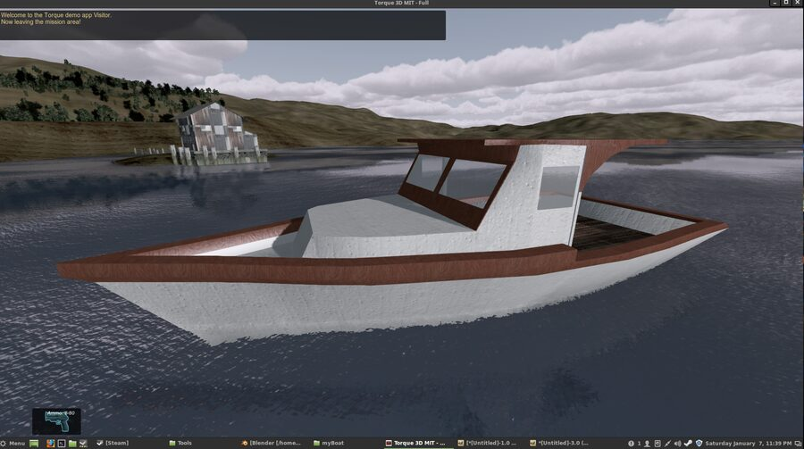
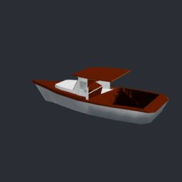
whitaker (OpenGameArt user) · CC0 1.0 Universal (Public Domain Dedication) · Community low-poly (mixed style)
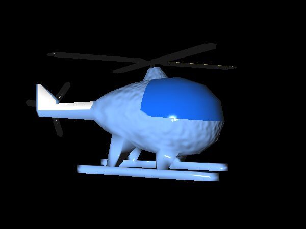
AG-OGA-HELI-0001 · Helicopter · fbx · D
tehbucket (OpenGameArt user) · CC0 1.0 Universal (Public Domain Dedication) · Community low-poly (mixed style)
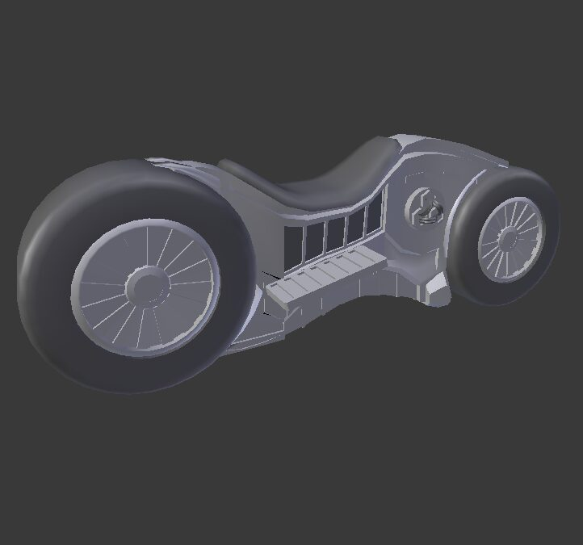
brylie (OpenGameArt user) · CC BY 4.0 · Community low-poly (mixed style)
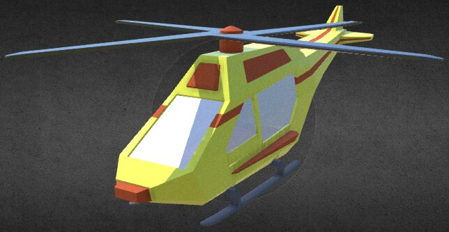
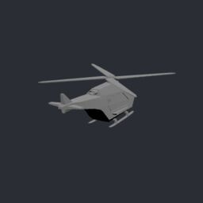
willy56 (OpenGameArt user) · CC BY 4.0 · Community low-poly (mixed style)
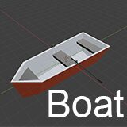
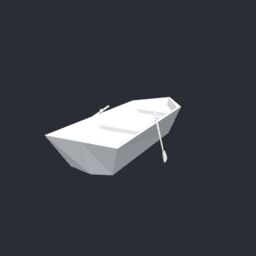
rgsdev (OpenGameArt user) · CC0 1.0 Universal (Public Domain Dedication) · Community low-poly (mixed style)
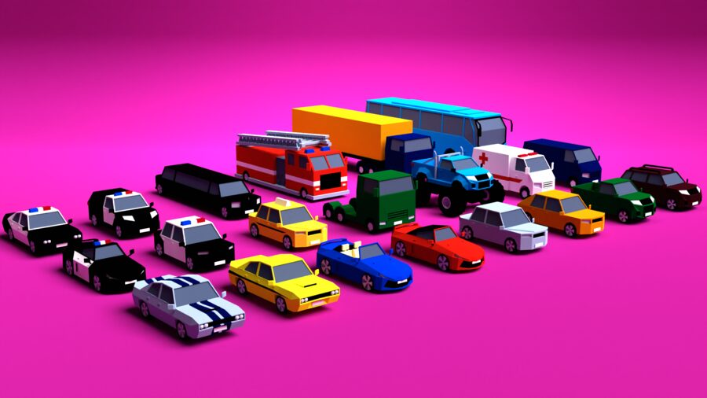

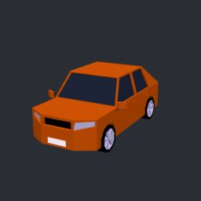
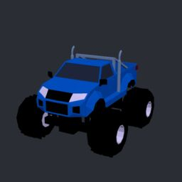
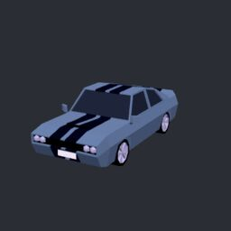
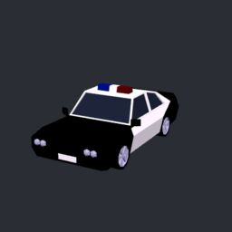
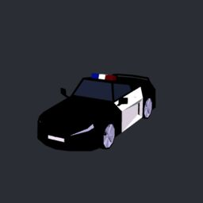
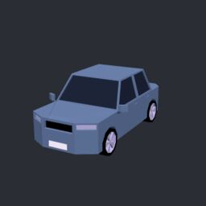
AG-OGA-VEHICLES-0002 · Bus · fbx · C
AG-OGA-VEHICLES-0003 · Firetruck · fbx · C
AG-OGA-VEHICLES-0005 · Limousine · fbx · C
AG-OGA-VEHICLES-0008 · Muscle · fbx · C
AG-OGA-VEHICLES-0009 · Pickup · fbx · C
AG-OGA-VEHICLES-0011 · Police SUV · fbx · C
AG-OGA-VEHICLES-0012 · Police Sedan · fbx · C
AG-OGA-VEHICLES-0014 · Roadster · fbx · C
AG-OGA-VEHICLES-0015 · SUV · fbx · C
AG-OGA-VEHICLES-0017 · Sports · fbx · C
AG-OGA-VEHICLES-0018 · Taxi · fbx · C
AG-OGA-VEHICLES-0020 · Truck · fbx · C
AG-OGA-VEHICLES-0019 · Truck with trailer · fbx · C
AG-OGA-VEHICLES-0021 · Van · fbx · C
Poly Haven contributors · CC0 1.0 Universal (Public Domain Dedication) · Photoreal PBR (not stylized)
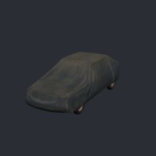
Quaternius · CC0 1.0 Universal (Public Domain Dedication) · Quaternius stylized low-poly
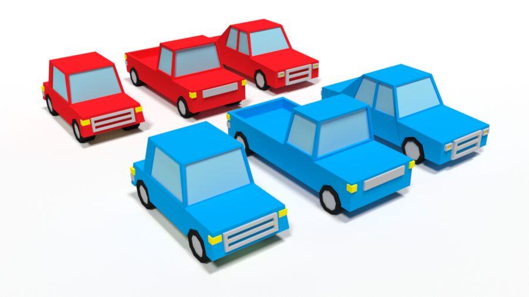
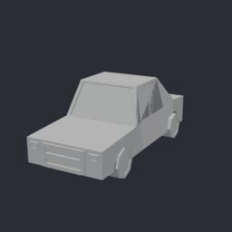
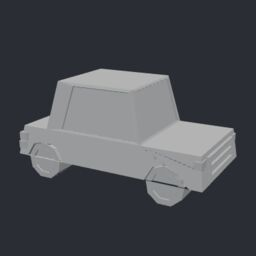
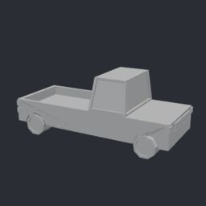
Quaternius · CC0 1.0 Universal (Public Domain Dedication) · Quaternius stylized low-poly
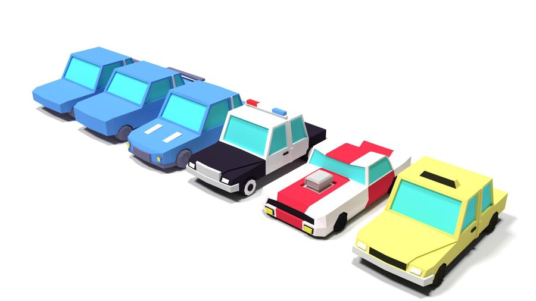
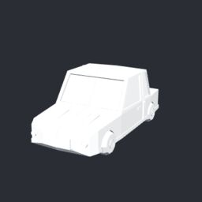
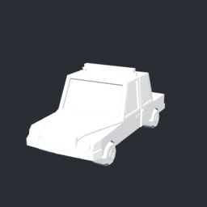
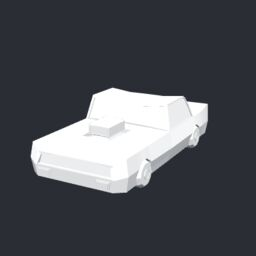
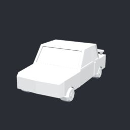
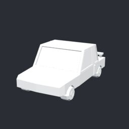
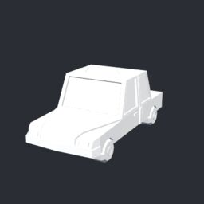
Quaternius · CC0 1.0 Universal (Public Domain Dedication) · Quaternius stylized low-poly
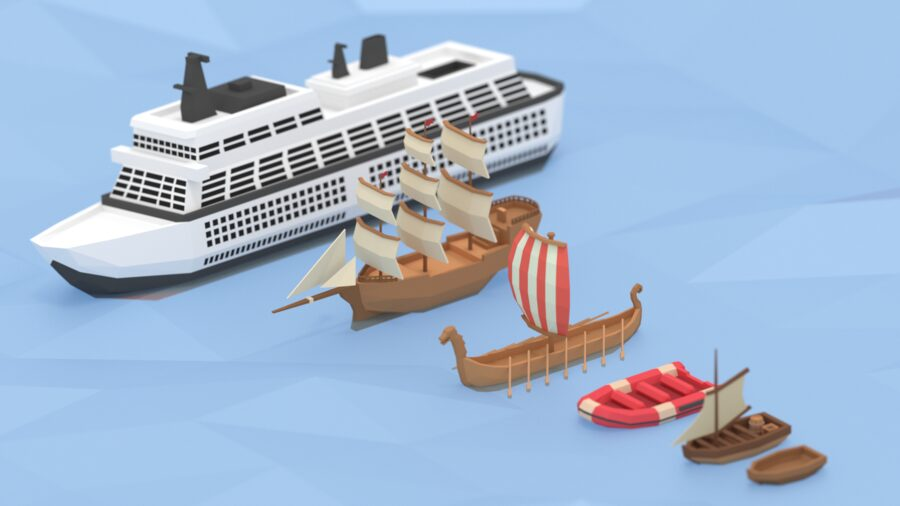
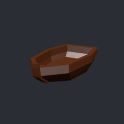
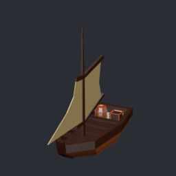
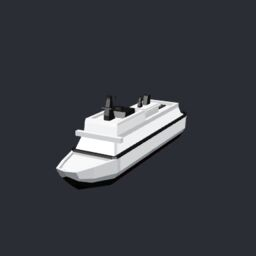
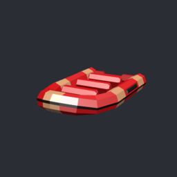
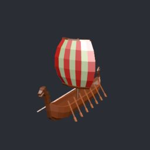
Quaternius · CC0 1.0 Universal (Public Domain Dedication) · Quaternius stylized low-poly
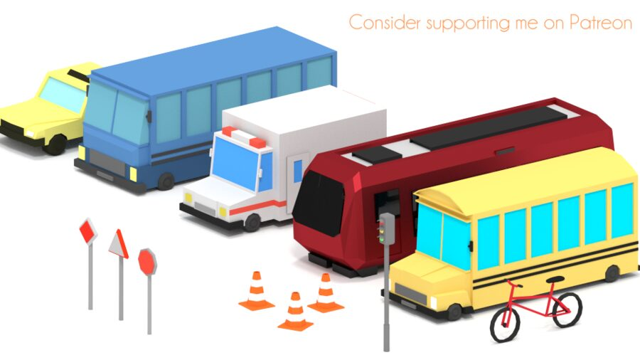
AG-QT-TRANSIT-0002 · Bicycle · fbx · C
AG-QT-TRANSIT-0004 · SchoolBus · fbx · C
AG-QT-TRANSIT-0006 · Taxi · fbx · C
AG-QT-TRANSIT-0008 · TrafficLight · fbx · C
AG-QT-TRANSIT-0010 · TrafficSign2 · fbx · C
AG-QT-TRANSIT-0012 · Train · fbx · C